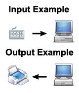

•Any information or data that is sent to a computer for processing is considered input. Input or user input is most often sent to the computer using an input device.
•Any information that has been processed by and sent out from a computer or similar device is considered output.
